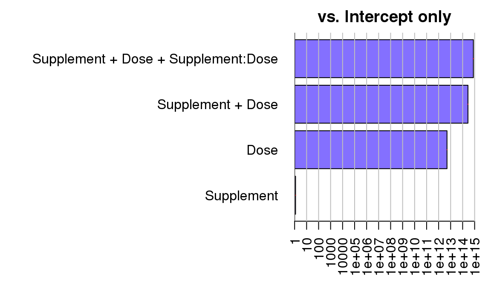
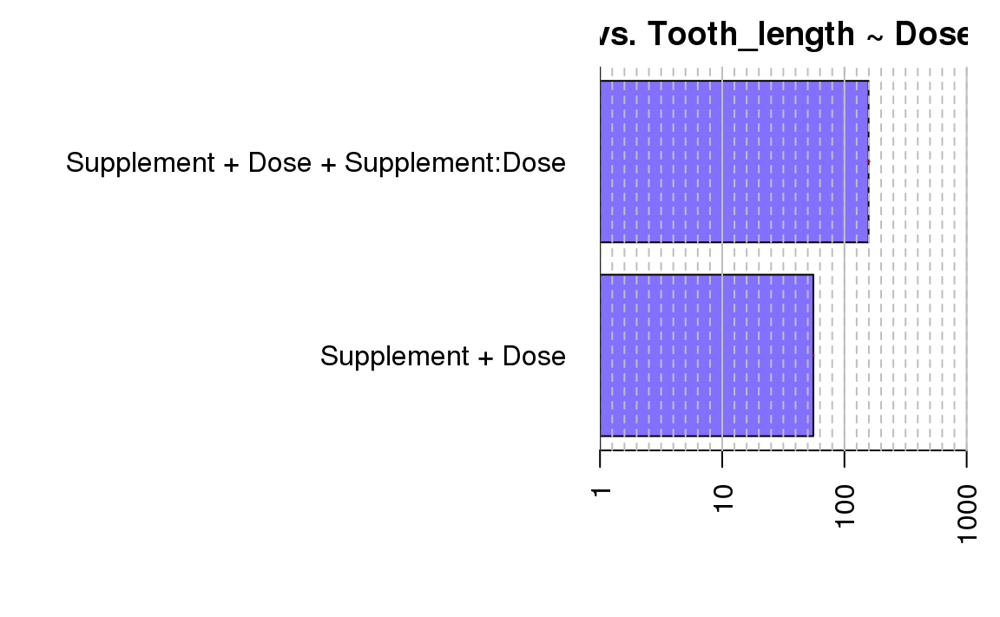
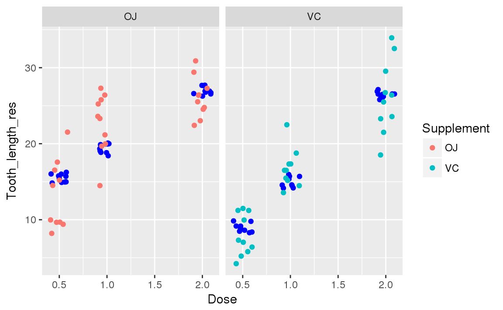

12 BayesFactor
12.1 ベイズファクター
- 尤度を比較する指標
- 事後確率の比と事前確率の比の比
- すごいわかりづらい
ある仮説のときにデータがこうなってるよね?
これって別の仮説の時のデータだとしたらどっちいいんかな?ってこと
\[\frac{p^{\prime} (H_{1} \mid D)}{p^{\prime}(H_0 \mid D)} = \frac{p(D \mid H_{1}) * p(H_{1})}{p(D \mid H_{0}) * p(H_{0})}\]
- つまり
\[\frac{p(D \mid H_{1})}{p(D \mid H_{0})} = \frac{\frac{p^{\prime}(H_{1} \mid D)}{p(H_{1})}}{\frac{p^{\prime}(H_{0} \mid D)}{p(H_{0})}}\]
12.2 anovaBF
BayesFactor::anovaBF- 分散を解析する関数
- factorじゃないと使えないらしい
- 質的変数として扱えるならそうする
- Doseは比例尺度と考えられる(量的変数)
- 今回は順位尺度と見る
# そのままやるとエラーになる
bf <- BayesFactor::anovaBF(
Tooth_length ~ Dose,
data = ToothGrowth2
)
#> Warning: data coerced from tibble to data frame
#> Error in createDataTypes(formula, whichRandom, data, analysis = "anova"): anovaBF() cannot be used with nonfactor independent variables. Use lmBF(), regressionBF(), or generalTestBF() instead.12.3 anovaBFの使用
- 公式にのっとってデータを整理していく
ToothGrowth2$Dose <- factor(ToothGrowth2$Dose)
levels(ToothGrowth2$Dose) <- c("Low", "Medium", "High")bf <- BayesFactor::anovaBF(
Tooth_length ~ Supplement * Dose,
data = ToothGrowth2
)
#> Warning: data coerced from tibble to data frame
#>
|
| | 0%
|
|================ | 25%
|
|================================ | 50%
|
|================================================= | 75%
|
|=================================================================| 100%
bf
#> Bayes factor analysis
#> --------------
#> [1] Supplement : 1.198757 ±0.01%
#> [2] Dose : 4.983636e+12 ±0%
#> [3] Supplement + Dose : 2.776051e+14 ±1.05%
#> [4] Supplement + Dose + Supplement:Dose : 7.855115e+14 ±1.95%
#>
#> Against denominator:
#> Intercept only
#> ---
#> Bayes factor type: BFlinearModel, JZS
bf[3:4] / bf[2]
#> Bayes factor analysis
#> --------------
#> [1] Supplement + Dose : 55.70333 ±1.05%
#> [2] Supplement + Dose + Supplement:Dose : 157.6181 ±1.95%
#>
#> Against denominator:
#> Tooth_length ~ Dose
#> ---
#> Bayes factor type: BFlinearModel, JZS- 今回はplotが用意されているので
plot()を使う
plot(bf)
plot(bf[3:4]/bf[2])
プロット結果
- 見た感じ
Supplementは関係なさそう Supplement + Dose + Supplement:Doseで仮設を立てるのが最も良さそう
というわけでfactorをnumericにするんですが 少し失敗しました。笑
levels(ToothGrowth2$Dose) <- c(0.5, 1, 2)
ToothGrowth2$Dose <- as.numeric(as.character(ToothGrowth2$Dose))
str(ToothGrowth2$Dose)
#> num [1:60] 0.5 0.5 0.5 0.5 0.5 0.5 0.5 0.5 0.5 0.5 ...12.4 ふたたび線形回帰分析
- 手順は同じ
# Tooth_length = b0 + b1*Supplement + b2*Dose + b3*Supplement*Dose
ToothGrowth_lm_result <- lm(Tooth_length ~ Supplement * Dose, data = ToothGrowth2)
summary(ToothGrowth_lm_result)
#>
#> Call:
#> lm(formula = Tooth_length ~ Supplement * Dose, data = ToothGrowth2)
#>
#> Residuals:
#> Min 1Q Median 3Q Max
#> -8.2264 -2.8462 0.0504 2.2893 7.9386
#>
#> Coefficients:
#> Estimate Std. Error t value Pr(>|t|)
#> (Intercept) 11.550 1.581 7.304 1.09e-09 ***
#> SupplementVC -8.255 2.236 -3.691 0.000507 ***
#> Dose 7.811 1.195 6.534 2.03e-08 ***
#> SupplementVC:Dose 3.904 1.691 2.309 0.024631 *
#> ---
#> Signif. codes: 0 '***' 0.001 '**' 0.01 '*' 0.05 '.' 0.1 ' ' 1
#>
#> Residual standard error: 4.083 on 56 degrees of freedom
#> Multiple R-squared: 0.7296, Adjusted R-squared: 0.7151
#> F-statistic: 50.36 on 3 and 56 DF, p-value: 6.521e-16- ggplotを使っていく
ToothGrowth2 <- ToothGrowth2 %>%
mutate(
Supplement_num = unclass(.$Supplement),
Tooth_length_res = predict(ToothGrowth_lm_result)
)
ToothGrowth2 %>% head() %>% knitr::kable()| Tooth_length | Supplement | Dose | Supplement_num | Tooth_length_res |
|---|---|---|---|---|
| 4.2 | VC | 0.5 | 2 | 9.152857 |
| 11.5 | VC | 0.5 | 2 | 9.152857 |
| 7.3 | VC | 0.5 | 2 | 9.152857 |
| 5.8 | VC | 0.5 | 2 | 9.152857 |
| 6.4 | VC | 0.5 | 2 | 9.152857 |
| 10.0 | VC | 0.5 | 2 | 9.152857 |
par(mfrow = c(2, 2))
plot(ToothGrowth_lm_result)
- 残差が同じぐらいの広がり
- 正規性が見て取れる
- クックの距離が0.5を超えているようなので当てはまりもよさそう
- 目盛りが狭すぎて見づらいけど
ToothGrowth2 %>%
ggplot(aes(Dose, color = Supplement)) +
geom_point(aes(y = Tooth_length_res) ,
position = position_jitter(width = 0.1, height = 1),
color = "#0000ff") +
geom_point(aes(y = Tooth_length) ,
position = position_jitter(width = 0.1)
) +
facet_wrap(~ Supplement)
- 95%信頼区間でのみ
b3 * Supplement * Doseが棄却される。 - イテレーションしたらもう少し違うかも。